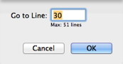

|
Go To Line |
|
You can jump to a line by number. To do so:
-
Choose Edit > Go To Line and enter a line number in the dialog.
(The number that appears when you summon this dialog is the number of the line where you currently are.)

To work more easily with line numbers, you can elect to show line numbers in your script. Also, the navigation bar (at the top right, above the text area in the script window) always shows the current line number. And there’s an Editor preference, “Show navigation bar location when scrolling,” that causes line numbers to be shown in a tooltip while you scroll.
There’s also a “table of contents” menu for jumping to a handler or other top-level entity.